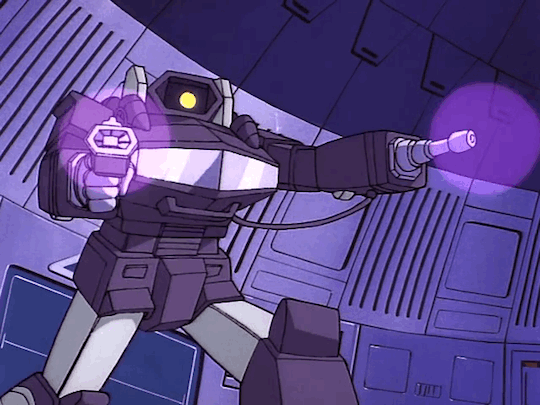

Hasbro entraría en un acuerdo con la empresa japonesa takara para importar a América la línea de juguetes “diaclone” y “microchange” que consistían en robots que se transformaban en autos, aviones, objetos comunes . Para vender los juguetes Hasbro junto las dos líneas y las unifico con el nombre “the Transformers”. Para promocionar los juguetes sacarían un comic en colaboración con Marvel y una serie animada.
La serie animada duro de 1984-1987 contando con 4 temporadas y una película que se estreno en cines, además de eso de eso 3 animes que no salieron de Japón.

Curiosidades
Originalmente la serie solo duraria 3 capitulos, se decidio pedir al final una temporada entera
Los episodios tenian poco tiempo de produccion, por eso hay muchos errores de animacion
Por problemas con los derechos el nombre jetfire no se uso en la serie dicho nombre
Una continuacion de la cuarta temporada fue planeada pero se cancelo
Apesar de tener el mismo nombre que el comic de Marvel, es una continuidad diferente
La unica historia que se comparte con el comic es la adaptacion de la pelicula y el episodio "the great broadcast of 2006"
La pelicula del 86 fue el ultimo papel que tuvo el actor Orson Welles intrepretando al personaje Unicron
Apesar de tener 3 animes y una ova exclusiva para Japon, la serie alla no pego fuerte
La razon por la que muchos personajes murieron en la pelicula del 86 fue por que sus juegetes fueron descontinuiados